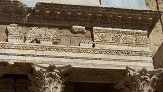
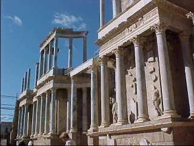
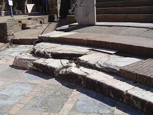
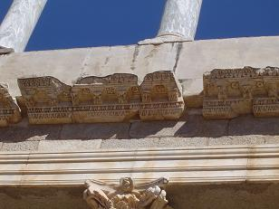

|
TEATRO Con toda seguridad el Teatro es el monumento más
emblemático y visitado de la ciudad de Mérida. Su construcción,
patrocinada por el cónsul Marco Agripa, yerno de Octavio Augusto, data de
casi la misma época de la fundación de Augusta Emerita. |
|
 |
 |
|
Ver video La grada o "cávea" está dividida en tres
sectores –Summa cavea, Media cavea e Ima cavea-, que a su vez acogían a
las distintas clases sociales romanas que habitaban la ciudad.
Entre las columnas de la escena una serie de
esculturas completan la decoración: Ceres, Plutón, Proserpina y retratos
imperiales. Los actuales son reproducciones, los originales se pueden
admirar en el MNAR.
  Con el paso de los años se va derrumbando, cegándose por la tierra y los escombros, manteniéndose visible durante siglos solo la parte superior del graderío con las bóvedas hundidas. Visto por los ojos del pueblo eran siete grandes asientos, “ las siete sillas” donde según cuenta la leyenda, se sentaron otros siete reyes moros para deliberar sobre el destino de la ciudad. Su aspecto actual data de las reconstrucciones llevadas a cabo a mediados del siglo XX.
Casa del Teatro Al oeste del peristilo del teatro, con este en uso, una casa ocupó parte de su espacio. Esta casa conserva los pavimentos de mosaicos. Accedemos a ella por un vestíbulo que comunica con un patio rodeado de columnas y pilastras. A este se abren una serie de habitaciones, de las que destacan las terminadas en ábside. La mayor de ellas, se decoró con pinturas murales que representan figuras humanas a tamaño natural. Ver video
|
|
Ver Teatros romanos
|
||
|
Vida en Emérita
|
||
|
Espectáculos y ocio |
Periferia e infraestructuras |
|